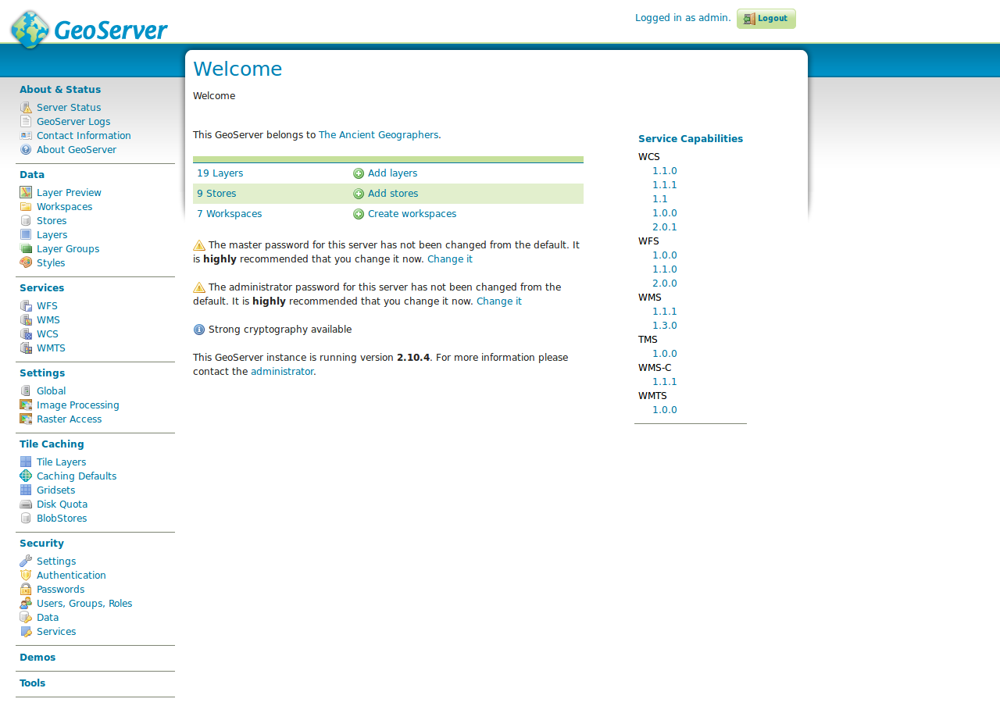

Administration interface
If not already done, please open the GeoServer web interface with a browser of your choice via the following URL:
http://localhost:8082/geoserver
Log in with the following credentials:
- User:
admin - Password:
geoserver
After successful login (as administrator) the access to all the functions of the map server are activated and the start screen changes. The view should be similar to the following figure.

Overview of function elements
The interface of the GeoServer is divided into two sections: On the left, the navigation menu, in which all setting options and lists appear, sorted by subcategory. In the central section the corresponding form fields are displayed, depending on the category selected. Depending on the selection, these forms can be divided into several tabs. In the following, the most important subcategories and use cases are listed and explained.